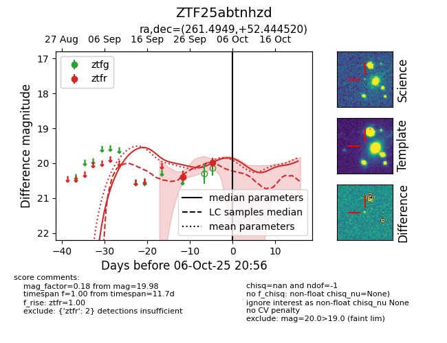
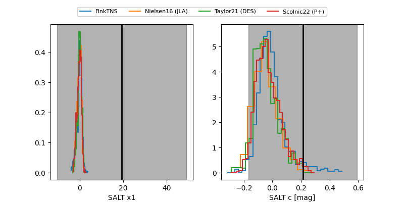

FINK: ZTF25abtnhzd
Lasair: ZTF25abtnhzd
ALeRCE: ZTF25abtnhzd
ZTF25abtnhzd (ztf,fink)
equatorial (ra, dec) = (261.4949,+52.44452)
galactic (l, b) = (79.7234,+33.99434)


last ztfr=19.98
2 ztfr detections